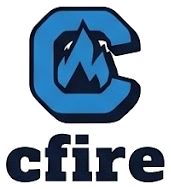

Zero garbage collection pauses. Zero foreign-wrapper runtime overhead. cfire pairs Go's 10-minute onboarding and Odin's batteries-included core:* standard library with Rust-grade call-site intent safety—lowering 1-to-1 into human-readable, zero-overhead ISO C++23.
A language designed without compromise: native C++23 ABI fidelity, strict intent safety, and rapid development speed.
Every type S struct is a direct C++23 aggregate. str lowers to std::string, []T to std::span<const T>, and T! to std::expected<T, cfire::Error>. Inspect the generated source with cfire emit-cpp at any time.
Parameters default to immutable borrows (in). Mutating (mut), output (out), and consuming (move) semantics require explicit markers at both definition and call site. The compiler enforces MUT-ALIAS exclusivity and USE-AFTER-MOVE tracking.
Ingest C and C++ headers directly via import cpp "header.h". Clang's AST bridge automatically maps types and coerces strings and slices. Call Raylib, SQLite, OpenSSL, or custom headers with zero manual FFI glue.
Batteries included from day one: RFC 6455 WebSockets, HTTP client/server, SQLite, Zstandard compression, AES-256 GCM AEAD, HMAC-SHA256, cancellation Contexts, SIMD JSON, UTF-8 Unicode, and CLI struct tag parsers.
Short declarations (:=), multi-return tuples ((x, y) := f()), slice destructuring ([first, ..rest]), defer resource cleanup, and clean error propagation (try and or) make writing systems code a genuine joy.
Includes built-in run, build, test, fmt, check, lsp (Language Server Protocol), doc, and cfire eject to export a standalone C++23 project with CMakeLists.txt and zero lock-in.
Select any systems pattern below to inspect the clean, idiomatic ISO C++23 code emitted by the compiler.
package main
type Box struct {
value: i32
}
fn increment(mut b: Box, amount: i32) {
b.value = b.value + amount
}
fn main() {
mut b := Box{ value: 40 }
// Call-site 'mut' marker is mandatory:
increment(mut b, 2)
// Explicit unique ownership:
p := make(own[Box], Box{ value: 100 })
println("b={} p={}", b.value, (*p).value)
}#include "cfire_prelude.hpp"
struct Box {
std::int32_t value{};
};
template <>
struct cfire::reflect_struct<Box> {
static constexpr std::string_view name = "Box";
static constexpr std::size_t field_count = 1;
static constexpr std::array<std::string_view, 1> field_names = {
"value",
};
static constexpr std::array<std::string_view, 1> field_tags = {
R"tag()tag",
};
};
auto increment(Box& b, std::int32_t amount) -> void {
b.value = (b.value + amount);
}
auto main(int argc, char** argv) -> int {
auto b = Box{.value = 40};
increment(b, 2);
auto p = cfire::make_own<Box>(Box{.value = 100});
std::println("b={} p={}", b.value, (*p).value);
return 0;
}
package main
type Token enum {
Ident(name: str),
Number(val: i64),
Eof,
}
fn classify(s: []str) -> str {
match s {
[] => { return "empty" }
[head, ..tail] => { return "head=" + head }
[first, ..mid, last] => { return first + ".." + last }
}
return "other"
}
fn main() {
items: []str = ["alpha", "beta", "gamma"]
println("result: {}", classify(items))
}#include "cfire_prelude.hpp"
struct Token {
struct _Ident {
std::string _0{};
};
struct _Number {
std::int64_t _0{};
};
struct _Eof {
};
std::variant<_Ident, _Number, _Eof> _v;
[[nodiscard]] static auto Ident(std::string a0) -> Token { return Token{_Ident{std::move(a0)}}; }
[[nodiscard]] static auto Number(std::int64_t a0) -> Token { return Token{_Number{std::move(a0)}}; }
[[nodiscard]] static auto Eof() -> Token { return Token{_Eof{}}; }
};
[[nodiscard]] auto classify(const std::vector<std::string>& s) -> std::string {
{
const auto& _target = s;
bool _matched = false;
if (!_matched && _target.size() == 0) {
_matched = true;
return "empty";
}
if (!_matched && _target.size() >= 1) {
_matched = true;
const auto& head = _target[0];
auto tail = cfire::slice(_target, 1, _target.size());
return ("head=" + head);
}
if (!_matched && _target.size() >= 2) {
_matched = true;
const auto& first = _target[0];
auto mid = cfire::slice(_target, 1, (_target.size() - 1));
const auto& last = _target[_target.size() - 1];
return ((first + "..") + last);
}
}
return "other";
}
auto main(int argc, char** argv) -> int {
std::vector<std::string> items = {"alpha", "beta", "gamma"};
std::println("result: {}", classify(items));
return 0;
}
package main
import "core:net/websocket"
import "core:sync/context"
import "core:time"
fn main() {
bg := context.background()
(ctx, cancel) := context.with_timeout(bg, 500)
defer cancel("done")
(mut client, mut server) := try websocket.pair()
try client.send_text("ping-payload")
msg := try server.recv_text()
println("received: {}", msg)
}#include "cfire_prelude.hpp"
#include "cfire_core_stdlib.hpp"
auto main(int argc, char** argv) -> int {
auto bg = cfire::context::background();
auto [ctx, cancel] = cfire::context::with_timeout(bg, 500);
auto _defer_1 = cfire::scope_exit([&] { cancel("done"); });
auto [client, server] = ({
auto&& _res = (cfire::websocket::pair());
if (!_res.has_value()) {
std::println(stderr, "Error: {}", _res.error().message());
std::exit(1);
}
cfire::unwrap_val(std::forward<decltype(_res)>(_res));
});
auto _try_v_1 = client.send_text("ping-payload");
if (!_try_v_1.has_value()) {
std::println(stderr, "Error: {}", _try_v_1.error().message());
return 1;
}
auto _try_2 = server.recv_text();
if (!_try_2.has_value()) {
std::println(stderr, "Error: {}", _try_2.error().message());
return 1;
}
auto msg = std::move(*_try_2);
std::println("received: {}", msg);
return 0;
}
package main
import "core:json"
type Metric struct {
service: str `json:"service"`
latency: f64 `json:"latency_ms"`
healthy: bool `json:"healthy"`
}
fn main() {
payload := `{"service":"auth","latency_ms":1.42,"healthy":true}`
m := try json.parse[Metric](payload)
println("service={} latency={}ms", m.service, m.latency)
}// @cfire-link: -lsimdjson
#define CFIRE_USE_SIMDJSON 1
#include "cfire_prelude.hpp"
#include "cfire_core_stdlib.hpp"
struct Metric {
std::string service{};
double latency{};
bool healthy{};
};
template <>
struct cfire::reflect_struct<Metric> {
static constexpr std::string_view name = "Metric";
static constexpr std::size_t field_count = 3;
static constexpr std::array<std::string_view, 3> field_names = {
"service",
"latency",
"healthy",
};
static constexpr std::array<std::string_view, 3> field_tags = {
R"tag(json:"service")tag",
R"tag(json:"latency_ms")tag",
R"tag(json:"healthy")tag",
};
};
template <>
inline auto cfire::json::parse_struct<Metric>(simdjson::ondemand::object obj) -> std::expected<Metric, cfire::Error> {
Metric out{};
CFIRE_TRY_ASSIGN(out.service, cfire::json::get_str(obj, "service"));
CFIRE_TRY_ASSIGN(out.latency, cfire::json::get_f64(obj, "latency_ms"));
CFIRE_TRY_ASSIGN(out.healthy, cfire::json::get_bool(obj, "healthy"));
return out;
}
template <>
inline auto cfire::json::stringify_struct<Metric>(const Metric& val) -> std::string {
std::string out = "{";
out += std::format("\"service\":\"{}\"", cfire::json::escape_string(val.service));
out += std::format(",\"latency_ms\":{}", val.latency);
out += std::format(",\"healthy\":{}", val.healthy ? "true" : "false");
out += "}";
return out;
}
auto main(int argc, char** argv) -> int {
auto payload = R"({"service":"auth","latency_ms":1.42,"healthy":true})";
auto _try_1 = cfire::json::parse<Metric>(payload);
if (!_try_1.has_value()) {
std::println(stderr, "Error: {}", _try_1.error().message());
return 1;
}
auto m = std::move(*_try_1);
std::println("service={} latency={}ms", m.service, m.latency);
return 0;
}
package main
// Direct C header ingestion via Clang AST bridge:
import cpp "fast_hash.h"
fn main() {
msg := "cfire systems programming"
// Automatic boundary coercion: 'str' passes as 'const char*'
hash := cpp::fh_fnv1a(msg, msg.len())
println("fnv1a hash: 0x{:x}", hash)
}#include "cfire_prelude.hpp"
#include <fast_hash.h>
auto main(int argc, char** argv) -> int {
std::string msg = "cfire systems programming";
auto hash = fh_fnv1a(msg, msg.size());
std::println("fnv1a hash: 0x{:x}", hash);
return 0;
}
Where cfire fits in the modern systems programming landscape.
| Dimension | C++23 (Raw) | Rust | Go | cfire (Sapphire on Fire) |
|---|---|---|---|---|
| Syntax & Ergonomics | Complex, verbose, 40 years of legacy baggage. | Steep learning curve, explicit lifetime annotations. | Clean, rapid 10-minute onboarding. | Go-clean syntax with pattern matching, tuples, and defer. |
| Runtime & GC | Zero GC, manual or RAII memory management. | Zero GC, compile-time borrow checker. | Mandatory ~20MB garbage-collected runtime. | Zero GC, zero wrapper runtime, pure C++23 RAII. |
| Intent & Mutation Safety | Default const ref, easy dangling references. | Strict borrow checker, exclusive &mut. |
Pointers allow unrestricted aliased mutations. | Call-site intent markers (mut, move, out) + alias exclusivity. |
| C & C++ Interop | Native, but complex build & header dependencies. | Requires unsafe C FFI or bindgen/cxx wrappers. |
Cgo overhead, difficult direct C++ integration. | Direct Clang AST ingestion + 1-to-1 ISO C++23 ABI. |
| Stdlib Batteries | STL provided; networking, JSON, SQLite require 3rd party libs. | Minimal stdlib; relies on external crates. | Rich built-in stdlib (HTTP, crypto, json). | 13 built-in core:* modules (WebSockets, HTTP, SQLite, Zstd, AES). |
| Project Ejection | N/A | N/A (locked into Cargo toolchain) | N/A | cfire eject exports clean C++23 + standard CMake. |
From zero to running your first high-performance systems service in under 60 seconds.
Clone and compile the pure C++23 compiler in seconds with zero external dependencies:
git clone https://github.com/cfire-lang/cfire
cd cfire && makeCreate a clean, idiomatic service file with built-in stdlib:
package main
import "core:time"
fn main() {
now := time.now()
println("Hello from cfire! 🚀")
println("Time: {}", now.format_rfc3339())
}Execute immediately, compile a binary, or eject to CMake:
./cfire run main.cf
./cfire build main.cf -o my_service
./cfire eject main.cf ./standalone_pkgComprehensive guides, language references, and standard library catalogs.
Compiler architecture, project layout, CLI driver commands, and your first programs.
Primitives, compound types, in, mut, out, move, and exclusivity rules.
Tagged unions, pattern matching, slice destructuring ([head, ..tail]), and exhaustiveness.
Direct Clang AST ingestion, C++ STL lowering, automatic boundary coercion, and CMake ejection.
Fallible types (T!), early exit (try), fallback divergence (or err { ... }), and defer.
Thread-safe channels, cancellation Contexts, timeout deadlines, and async scopes.
Deep-dive into 13 core:* modules: WebSockets, HTTP, SQLite, Zstd, Crypto, and JSON.
Declarative build.cf, Git remote dependencies, offline vendoring, and compiler caching.